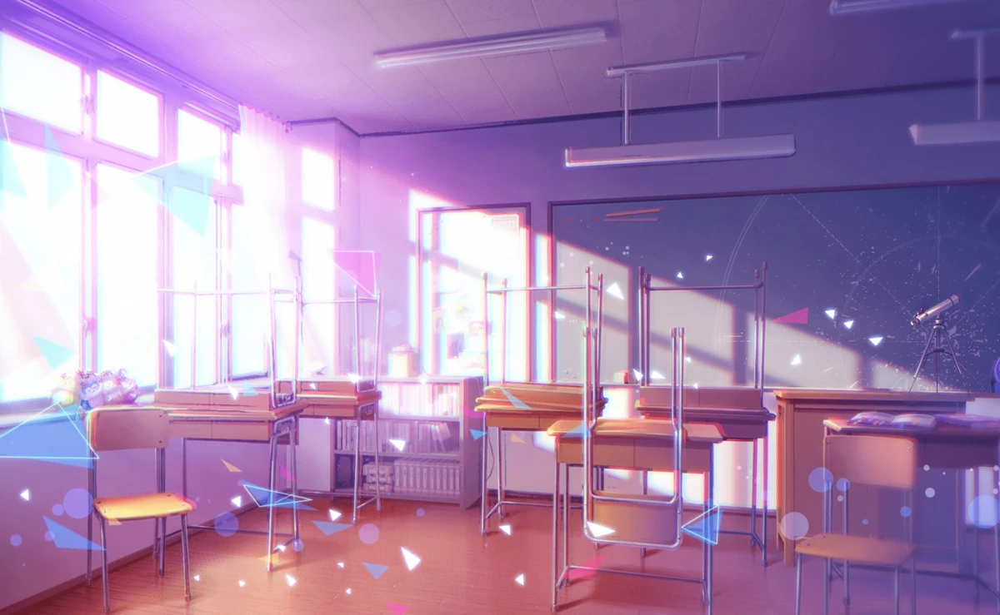
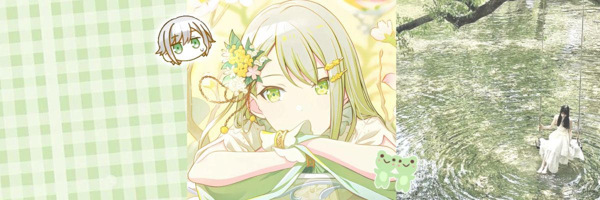
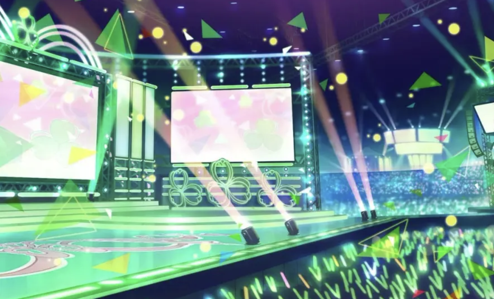
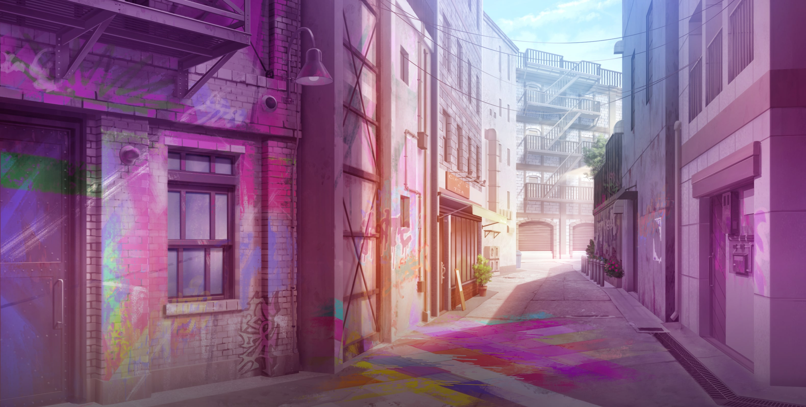
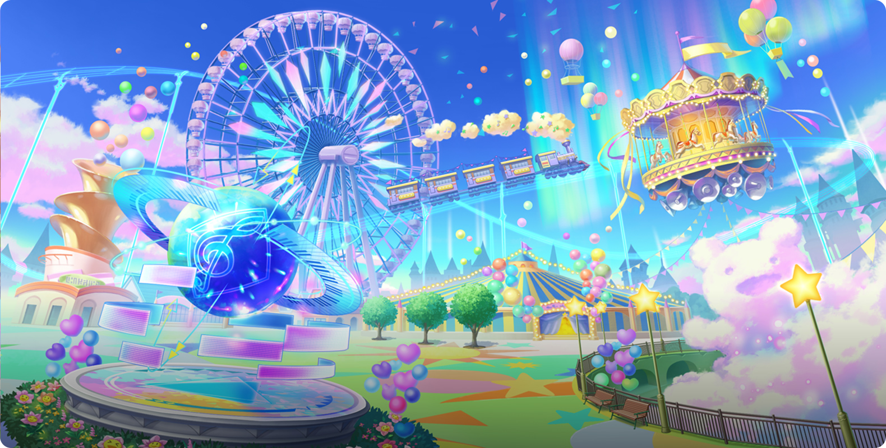
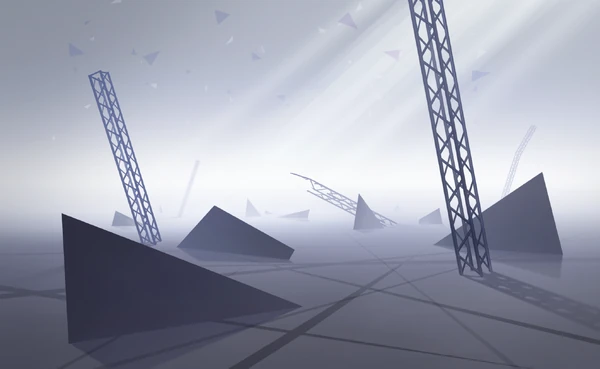
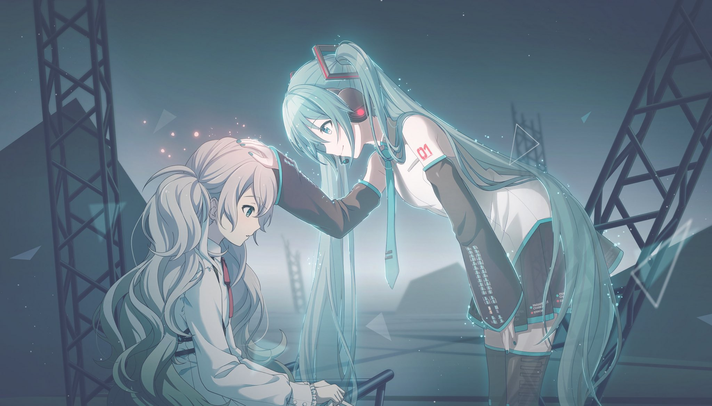

01 · LEO/NEED
School Sekai
A familiar school setting connected to the group's memories and their love of music.
04 / THE WORLDS
Mysterious worlds appear from people's feelings and wishes. Each group discovers a place that reflects their story.

FIVE DIFFERENT WORLDS
The Sekai settings reflect the groups' emotions, dreams and creative identities.

A familiar school setting connected to the group's memories and their love of music.

A sparkling stage world that reflects the group's hopes of becoming idols.

A lively street-inspired world full of music, energy and ambition.

A whimsical place filled with imagination, playful surprises and showtime spirit.

A quiet, expansive world that reflects the group's complicated feelings and search for connection.

VIRTUAL SINGERS
The Virtual Singers can appear with different looks and personalities depending on the Sekai. This makes them a fun visual thread connecting the different groups and stories.